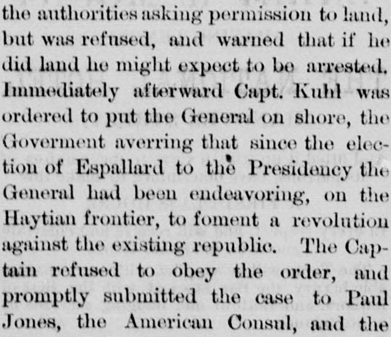
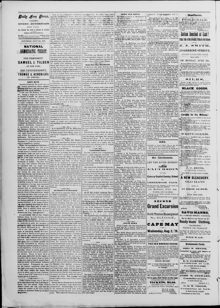

See the full pageVer la página completaThe Cap tain refused to obey the order, and promptly submittedEl capitán se negó a obedecer la orden, y prontamente presentó
According to the newspaper report, the Dominican government ordered the arrest of a general aboard the steamship Tyhee on the grounds of attempting to foment a revolution from the Haytian frontier, but American Consul Paul Jones decided the general was entitled to remain on board under the protection of the American flag. Despite the Consul's protests and Captain Kuhl's preparations to defend the vessel—which included displaying American flags—Dominican authorities brought a field piece to the wharf and sent fifty armed soldiers who tore away the flags and boarded the ship.Según la reseña periodística, el gobierno dominicano ordenó el arresto de un general a bordo del vapor Tybee bajo la acusación de intentar fomentar una revolución desde la frontera haitiana, pero el cónsul estadounidense Paul Jones determinó que el general tenía derecho a permanecer a bordo al amparo del pabellón estadounidense. Pese a las protestas del cónsul y a los preparativos del capitán Kuhl para defender la nave —que incluyeron el despliegue de banderas estadounidenses—, las autoridades dominicanas emplazaron una pieza de artillería en el muelle y despacharon a cincuenta soldados armados que arrancaron las banderas y abordaron el buque.
FULL TEXT:TRADUCCIÓN:
An Insult to be Resented.Un insulto que debe ser resentido.
The American steamship Tybee, C. J. F. Kuhl commanding, arrived in San Domingo on the 26th of June last, having on board as a passenger Gen. Pablo Villaneva, formerly Minister of War under Baez and Gonzalez, but who, since the establishment of the republic, has retired entirely from public life. He desired, he said to take no further active part in public affairs, but to live quietly with his family in San Domingo, where he has large estates. Accordingly, he sent to the authorities asking permission to land, but was refused, and warned that if he did land he might expect to be arrested. Immediately afterward Capt. Kuhl was ordered to put the General on shore, the Goverment averring that since the election of Espallard to the Presidency the General had been endeavoring, on the Haytian frontier, to foment a revolution against the existing republic. The Captain refused to obey the order, and promptly submitted the case to Paul Jones, the American Consul, and the Consul decided that as the General was an ordinary paying passenger, and had not been on shore, coming on board from Hayti with the avowed intention of returning to that place in case he was not allowed to land at San Domingo, he was entitled to remain on board, and was under the protection of the American flag.El vapor estadounidense Tybee, al mando de C. J. F. Kuhl, llegó a Santo Domingo el 26 de junio pasado, teniendo a bordo como pasajero al general Pablo Villaneva, anteriormente Ministro de Guerra bajo Báez y González, pero quien, desde el establecimiento de la república, se ha retirado enteramente de la vida pública. Deseaba, dijo, no tomar más parte activa en los asuntos públicos, sino vivir tranquilamente con su familia en Santo Domingo, donde tiene grandes propiedades. En consecuencia, envió a las autoridades pidiendo permiso para desembarcar, pero le fue negado, y se le advirtió que si desembarcaba podía esperar ser arrestado. Inmediatamente después se ordenó al capitán Kuhl poner al General en tierra, afirmando el Gobierno que desde la elección de Espallard a la Presidencia el General había estado intentando, en la frontera haitiana, fomentar una revolución contra la república existente. El Capitán se negó a obedecer la orden, y prontamente sometió el caso a Paul Jones, el Cónsul estadounidense, y el Cónsul decidió que como el General era un pasajero ordinario pagante, y no había estado en tierra, habiendo subido a bordo desde Haití con la intención declarada de regresar a ese lugar en caso de que no se le permitiera desembarcar en Santo Domingo, tenía derecho a permanecer a bordo, y estaba bajo la protección de la bandera estadounidense.
On the 25th of June, as the Tybee was ready to sail, an order was received from the Minister of the Interior, commanding her to remain. To this the American Consul made reply that he had on board a special bearer of despatches to his Goverment, that the ship was properly cleared, and that she would sail unless detained by force. This message was treated with no more respect than a passing breath.El 25 de junio, cuando el Tybee estaba listo para zarpar, se recibió una orden del Ministro del Interior, ordenándole permanecer. A esto el Cónsul estadounidense respondió que tenía a bordo un portador especial <redacted> despachos para su Gobierno, que el buque estaba debidamente despachado, y que zarparía a menos que fuera detenido por la fuerza. Este mensaje fue tratado con no más respeto que un soplo pasajero.
Seeing that an attempt was to be made to take his passenger, Capt. Kuhl made preparations. American flags were tied to the stanchions on both sides of the gangways, and all intruders were warned away. This action the Dominicans sim-Viendo que se haría un intento de llevarse a su pasajero, el capitán Kuhl hizo preparativos. Se ataron banderas estadounidenses a los puntales a ambos lados de las planchas de desembarco, y se advirtió a todos los intrusos que se alejaran. Esta acción los dominicanos sim-
The Daily Free Press. Trenton, N.J., July 8, 1876.
See the original at the Library of CongressVer el original en la Biblioteca del Congreso
Published by: Chas. W. Jay & Chas. B. YardPublicado por: Chas. W. Jay & Chas. B. Yard
Edition: Edition 1Edición: edición 1
Page: 2Página: 2
Frequency: daily (1876–1877)Frecuencia: diario (1876–1877)
Collection: Chronicling America, Library of CongressColección: Chronicling America, de la Biblioteca del Congreso
LCCN: sn85025540LCCN: sn85025540
ISSN: 2835-401xISSN: 2835-401x
OCLC: 11789123OCLC: 11789123
Rights: public domain, according to the Library of CongressDerechos: dominio público, según la Biblioteca del Congreso